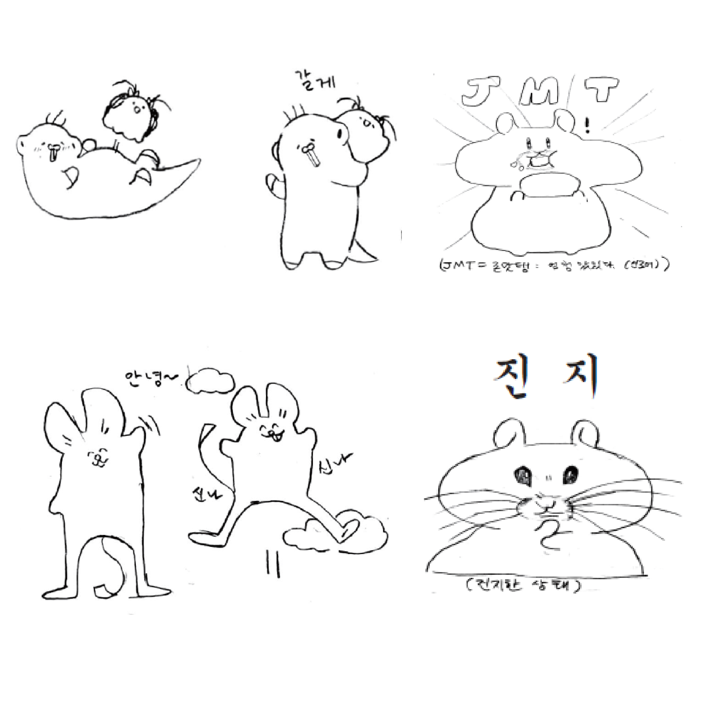
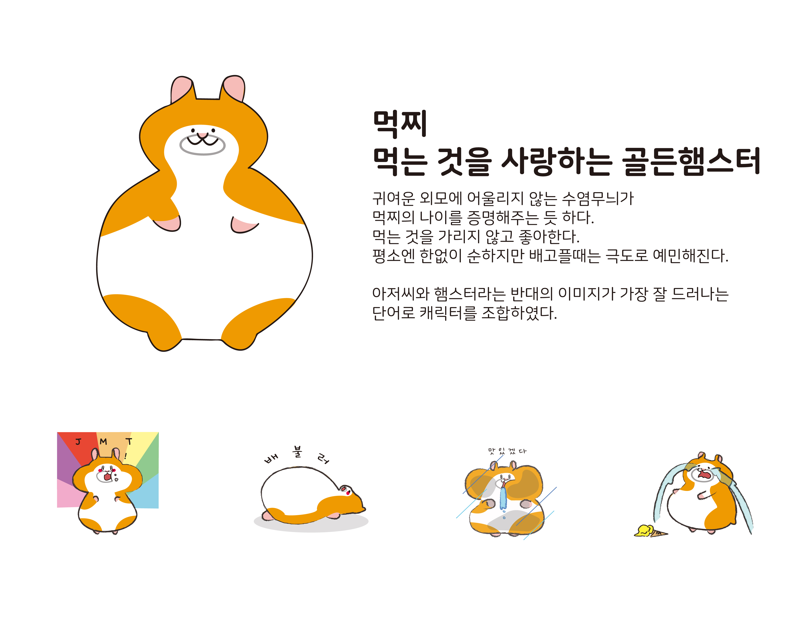
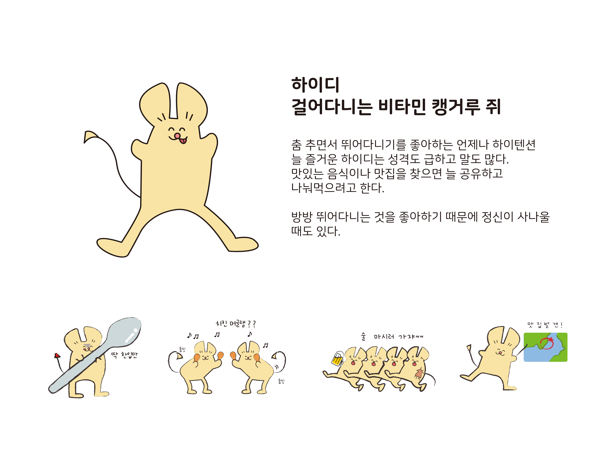
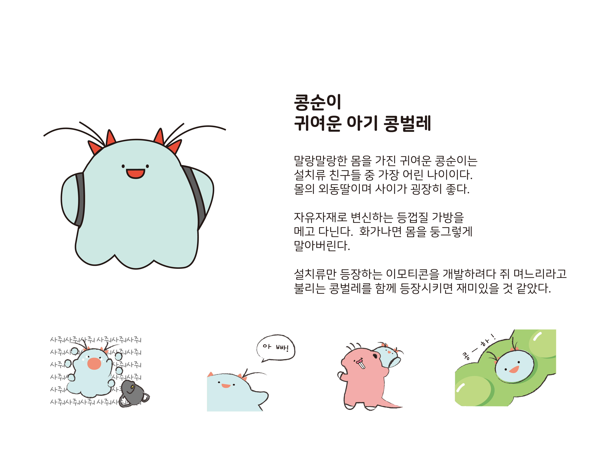
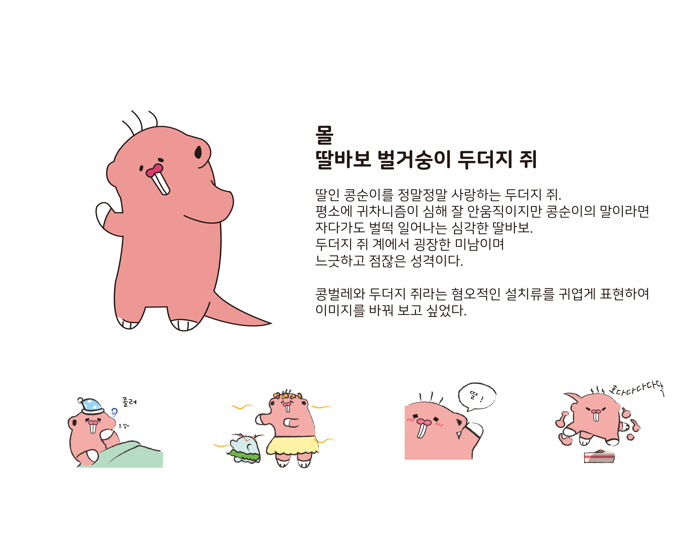
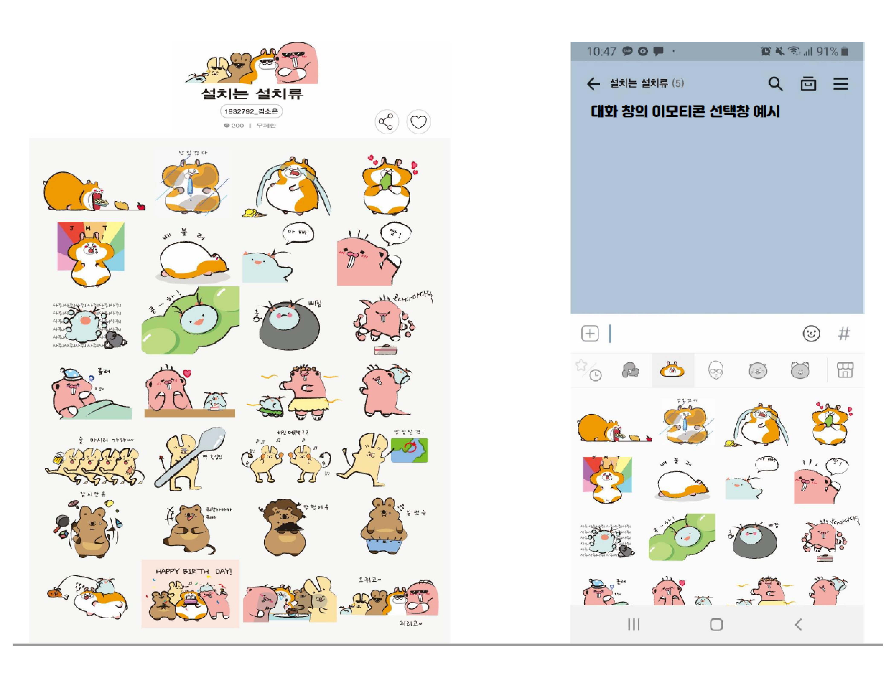

설치는 설치류 이모티콘
제작시기:1학년 2학기
제작이유: 컴퓨터 그래픽스 1 이모티콘 제작 수업
컨셉: 음식을 사랑하는 설치류 아저씨들의 식도락 여행기.
설명: 브레인 스토밍을 통해 랜덤단어를 조합하여 이모티콘 캐릭터를 제작했습니다. '쥐'와 '아저씨'의 재미있는 조합으로 시작하여 사람들에게 공감을 얻을 수 있는 이모티콘을 만들기 위해 음식을 주제로 한 이모티콘을 만들게 되었습니다. 설치는 설치류의 캐릭터들은 우리 주변에서 볼 수 있는 성격과 특징을 담은 캐릭터 들로 음식을 좋아하는 살마이거나 주위에 그런 사람이 있다면 공감할 수 있을 것 입니다.
제작이유: 컴퓨터 그래픽스 1 이모티콘 제작 수업
컨셉: 음식을 사랑하는 설치류 아저씨들의 식도락 여행기.
설명: 브레인 스토밍을 통해 랜덤단어를 조합하여 이모티콘 캐릭터를 제작했습니다. '쥐'와 '아저씨'의 재미있는 조합으로 시작하여 사람들에게 공감을 얻을 수 있는 이모티콘을 만들기 위해 음식을 주제로 한 이모티콘을 만들게 되었습니다. 설치는 설치류의 캐릭터들은 우리 주변에서 볼 수 있는 성격과 특징을 담은 캐릭터 들로 음식을 좋아하는 살마이거나 주위에 그런 사람이 있다면 공감할 수 있을 것 입니다.






